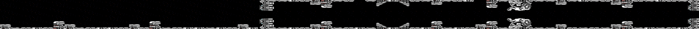
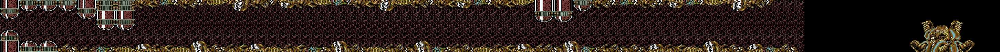
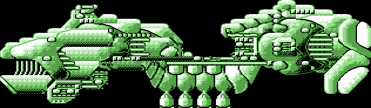
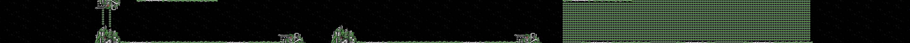
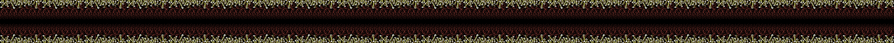
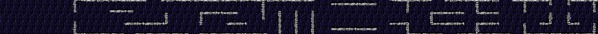
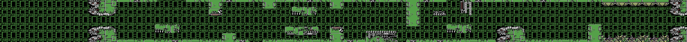
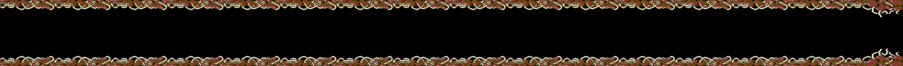

<meta charset="utf-8">
<meta name="viewport" content="width=device-width, initial-scale=1">
<title>{{title}}</title>
<link rel="preconnect" href="https://fonts.googleapis.com">
<link rel="stylesheet" href="https://fonts.googleapis.com/css2?family=Lato:wght@400;700;900&family=IBM+Plex+Mono:wght@400;500&display=swap">
<link rel="stylesheet" href="reference/r-type-page.css">
<!-- tabs -->
<header class="hero">
  <p class="eyebrow">{{platform}} · {{year}} · {{publisher}}</p>
  <h1>{{title}}</h1>
  <p class="sub">Stage 1’s floor is its ceiling drawn upside down, and stage 3 is one whole battleship that the screen moves around. All eight stages, drawn from the game’s own data.</p>
</header>
<main class="wrap">
<section id="maps" data-part="game">
  <p class="fig">How a stage is stored</p>
  <h2 class="t">Scenery built from blocks as the screen scrolls</h2>
  <p class="lede">Each stage loads as three files. The second holds its character set, a colour for each character, and blocks of characters with a list that places them along the stage (<code>build_map</code>, <code>$162F</code>). The screen scrolls one pixel every second frame, so a new column of characters comes into view every 16 frames (<code>scroll_side</code>, <code>$34FB</code>).</p>
  <p>The pictures below are drawn the same way, from each stage’s own bytes, in multicolour with the stage’s background colours. Enemies and bosses are sprites and are not in them; the <a href="graphics.html">Graphics</a> tab has those. Scroll each one sideways to see all of it. A ship lost past a stage’s restart point starts again there, and the dashed line labelled Restart marks where the screen’s left edge is when it does (<code>restart_point</code>, <code>$08F5</code>, with the columns in <code>restart_columns</code>, <code>$0B64</code>). A ship lost before it starts the stage again.</p>
</section>
<section id="stage-1" data-part="level-1">
  <p class="fig">Stage 1</p>
  <h2 class="t">The encounter</h2>
  <p class="lede">The station’s floor is its ceiling turned over. The bottom half of the play area is drawn from a second character set at <code>$E000</code> whose first 175 characters are the stage’s own set stored upside down, and the interrupt that starts the third band of sprites switches to it (<code>stage1_chars_flipped</code>, <code>$E000</code>). The boss waits at the far right.</p>
  <div class="strip" role="region" aria-label="Stage 1 map, scrolls sideways" tabindex="0"><div class="mapwrap"><div class="restart" style="left:38.74%"><span>Restart</span></div></div></div>
</section>
<section id="stage-2" data-part="level-2">
  <p class="fig">Stage 2</p>
  <h2 class="t">The living cave</h2>
  <p class="lede">Every third frame the stage’s routine turns the strips of characters <code>$B4</code> to <code>$BF</code> one bit, so the walls seem to creep (<code>stage2_frame</code>, <code>$943B</code>). Near the end the play area switches to a second character set for the last stretch of cave, and the boss is part of the map: an eye in the wall that takes eight hits.</p>
  <div class="strip" role="region" aria-label="Stage 2 map, scrolls sideways" tabindex="0"><div class="mapwrap"><div class="restart" style="left:43.80%"><span>Restart</span></div></div></div>
</section>
<section id="stage-3" data-part="level-3">
  <p class="fig">Stage 3</p>
  <h2 class="t">The huge battleship</h2>
  <p class="lede">Stage 3 has no strip of scenery. The battleship is one map 130 bytes wide (<code>battleship_map</code>, <code>$8E6C</code>), and the screen is a window that the game moves along it and up and down (<code>scroll_battleship</code>, <code>$3702</code>, in the game part). The stage ends once the ship has passed and its last wave is gone.</p>
  <div class="strip short" role="region" aria-label="Stage 3 map, scrolls sideways" tabindex="0"></div>
</section>
<section id="stage-4" data-part="level-4">
  <p class="fig">Stage 4</p>
  <h2 class="t">Fortress at the front</h2>
  <p class="lede">Six stars twinkle in characters of their own, each at its own speed (<code>$918D</code>). The boss at the end is three machines that are destroyed one at a time.</p>
  <div class="strip" role="region" aria-label="Stage 4 map, scrolls sideways" tabindex="0"><div class="mapwrap"><div class="restart" style="left:43.77%"><span>Restart</span></div></div></div>
</section>
<section id="stage-5" data-part="level-5">
  <p class="fig">Stage 5</p>
  <h2 class="t">The nest</h2>
  <p class="lede">A narrow corridor between walls of growths, with little room above or below the ship. At the end, twenty identical blobs drift together as the boss and flicker as they move (<code>boss5_routine</code>, <code>$82F8</code>).</p>
  <div class="strip" role="region" aria-label="Stage 5 map, scrolls sideways" tabindex="0"><div class="mapwrap"><div class="restart" style="left:56.54%"><span>Restart</span></div></div></div>
</section>
<section id="stage-6" data-part="level-6">
  <p class="fig">Stage 6</p>
  <h2 class="t">The transport system</h2>
  <p class="lede">There is no boss. Once the scenery stops, the stage’s routine keeps the script’s column moving, one step every 16 frames, so the last entries send wave after wave until the column reaches <span data-part=""><code>$9C00</code></span> (<code>stage6_frame</code>, <code>$9286</code>).</p>
  <div class="strip" role="region" aria-label="Stage 6 map, scrolls sideways" tabindex="0"><div class="mapwrap"><div class="restart" style="left:51.99%"><span>Restart</span></div></div></div>
</section>
<section id="stage-7" data-part="level-7">
  <p class="fig">Stage 7</p>
  <h2 class="t">A destroyed city</h2>
  <p class="lede">As in stage 6, waves keep coming after the scenery stops, and the stage is won when the column reaches <span data-part=""><code>$9C96</code></span>. The stage’s routine animates twelve characters through four frames (<code>stage7_frame</code>, <code>$93B6</code>).</p>
  <div class="strip" role="region" aria-label="Stage 7 map, scrolls sideways" tabindex="0"><div class="mapwrap"><div class="restart" style="left:47.06%"><span>Restart</span></div></div></div>
</section>
<section id="stage-8" data-part="level-8">
  <p class="fig">Stage 8</p>
  <h2 class="t">The heart of the Bydo empire</h2>
  <p class="lede">The last stage ends at its boss, a core behind a hatch that opens and shuts (<code>boss8_routine</code>, <code>$814C</code>). There is no restart point: a ship lost anywhere starts the stage again. Its files still hold large pieces of stage 7 (<a href="discoveries.html#leftovers">Discoveries</a>).</p>
  <div class="strip" role="region" aria-label="Stage 8 map, scrolls sideways" tabindex="0"></div>
</section>
</main>
</main>
<footer style="margin:16px 0 0;padding:22px var(--gx) 0;border-top:1px solid #e0ded8;font-family:'IBM Plex Mono',ui-monospace,Menlo,monospace;font-size:12px;color:#80838a"><a href="https://github.com/gamesexplained/gamesexplained" aria-label="GitHub" style="display:inline-flex;align-items:center;justify-content:center;width:26px;height:26px;margin-left:8px;border:1px solid #e0ded8;border-radius:7px;background:#ffffff;color:#80838a;vertical-align:middle"><svg width="15" height="15" viewBox="0 0 24 24" fill="currentColor" aria-hidden="true"><path d="M12 .297c-6.63 0-12 5.373-12 12 0 5.303 3.438 9.8 8.205 11.385.6.113.82-.258.82-.577 0-.285-.01-1.04-.015-2.04-3.338.724-4.042-1.61-4.042-1.61C4.422 18.07 3.633 17.7 3.633 17.7c-1.087-.744.084-.729.084-.729 1.205.084 1.838 1.236 1.838 1.236 1.07 1.835 2.809 1.305 3.495.998.108-.776.417-1.305.76-1.605-2.665-.3-5.466-1.332-5.466-5.93 0-1.31.465-2.38 1.235-3.22-.135-.303-.54-1.523.105-3.176 0 0 1.005-.322 3.3 1.23.96-.267 1.98-.399 3-.405 1.02.006 2.04.138 3 .405 2.28-1.552 3.285-1.23 3.285-1.23.645 1.653.24 2.873.12 3.176.765.84 1.23 1.91 1.23 3.22 0 4.61-2.805 5.625-5.475 5.92.42.36.81 1.096.81 2.22 0 1.606-.015 2.896-.015 3.286 0 .315.21.69.825.57C20.565 22.092 24 17.592 24 12.297c0-6.627-5.373-12-12-12"/></svg></a><a href="https://discord.gg/3V9GWyRDWV" aria-label="Discord" style="display:inline-flex;align-items:center;justify-content:center;width:26px;height:26px;margin-left:8px;border:1px solid #e0ded8;border-radius:7px;background:#ffffff;color:#80838a;vertical-align:middle"><svg width="15" height="15" viewBox="0 0 24 24" fill="currentColor" aria-hidden="true"><path d="M20.317 4.3698a19.7913 19.7913 0 00-4.8851-1.5152.0741.0741 0 00-.0785.0371c-.211.3753-.4447.8648-.6083 1.2495-1.8447-.2762-3.68-.2762-5.4868 0-.1636-.3933-.4058-.8742-.6177-1.2495a.077.077 0 00-.0785-.037 19.7363 19.7363 0 00-4.8852 1.515.0699.0699 0 00-.0321.0277C.5334 9.0458-.319 13.5799.0992 18.0578a.0824.0824 0 00.0312.0561c2.0528 1.5076 4.0413 2.4228 5.9929 3.0294a.0777.0777 0 00.0842-.0276c.4616-.6304.8731-1.2952 1.226-1.9942a.076.076 0 00-.0416-.1057c-.6528-.2476-1.2743-.5495-1.8722-.8923a.077.077 0 01-.0076-.1277c.1258-.0943.2517-.1923.3718-.2914a.0743.0743 0 01.0776-.0105c3.9278 1.7933 8.18 1.7933 12.0614 0a.0739.0739 0 01.0785.0095c.1202.099.246.1981.3728.2924a.077.077 0 01-.0066.1276 12.2986 12.2986 0 01-1.873.8914.0766.0766 0 00-.0407.1067c.3604.698.7719 1.3628 1.225 1.9932a.076.076 0 00.0842.0286c1.961-.6067 3.9495-1.5219 6.0023-3.0294a.077.077 0 00.0313-.0552c.5004-5.177-.8382-9.6739-3.5485-13.6604a.061.061 0 00-.0312-.0286zM8.02 15.3312c-1.1825 0-2.1569-1.0857-2.1569-2.419 0-1.3332.9555-2.4189 2.157-2.4189 1.2108 0 2.1757 1.0952 2.1568 2.419 0 1.3332-.9555 2.4189-2.1569 2.4189zm7.9748 0c-1.1825 0-2.1569-1.0857-2.1569-2.419 0-1.3332.9554-2.4189 2.1569-2.4189 1.2108 0 2.1757 1.0952 2.1568 2.419 0 1.3332-.946 2.4189-2.1568 2.4189Z"/></svg></a><br>© Games Explained contributors. Write-ups, facts and symbol maps are available under <a href="https://creativecommons.org/licenses/by-sa/4.0/" style="color:#1f5fa8;text-decoration:none">CC BY-SA 4.0</a>; code under <a href="https://opensource.org/licenses/MIT" style="color:#1f5fa8;text-decoration:none">MIT</a></footer>
